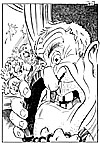

|
Dagens Inge:  Inge-galleri Tidligere artikler |
Dagens ledere Morgen: USA og Russland Uholdbart |
Aften: Lyspunkt for syke i Oslo |
|
Kommentar Russisk søkelys mot Finnmark på ny KOLA-PARADOKS: Moskvas årvåkenhet i nord vokser når russernes militærmakt svekkes. NILS MORTEN UDGAARD Artikkelforfatteren er utenriksredaktør i Aftenposten.
Et regjeringsforsøk som strander
|
I dag Fri oss fra byråkratistene! LOVER OG REGLER: Ingen grenser for millimeter- kontroll av vårt liv og levnet? JOHN G. BERNANDER Sentralstyremedlem i Høyre. | |
|
Kronikk Guatemala: Fra valg til fred i 1996? STURLA STÅLSETT Dette året blir kritisk for fredsprosessen i Guatemala, som Norge har engasjert seg sterkt i. Utfallet av presidentvalget bedret utsiktene for en endelig fredsavtale, men det er mange hindre og stor utålmodighet. Stipendiat Sturla Stålsett har fulgt fredsprosessen på nært hold fra starten av gjennom sitt arbeid i Kirkens Nødhjelp og Det lutherske Verdensforbund.
|
||